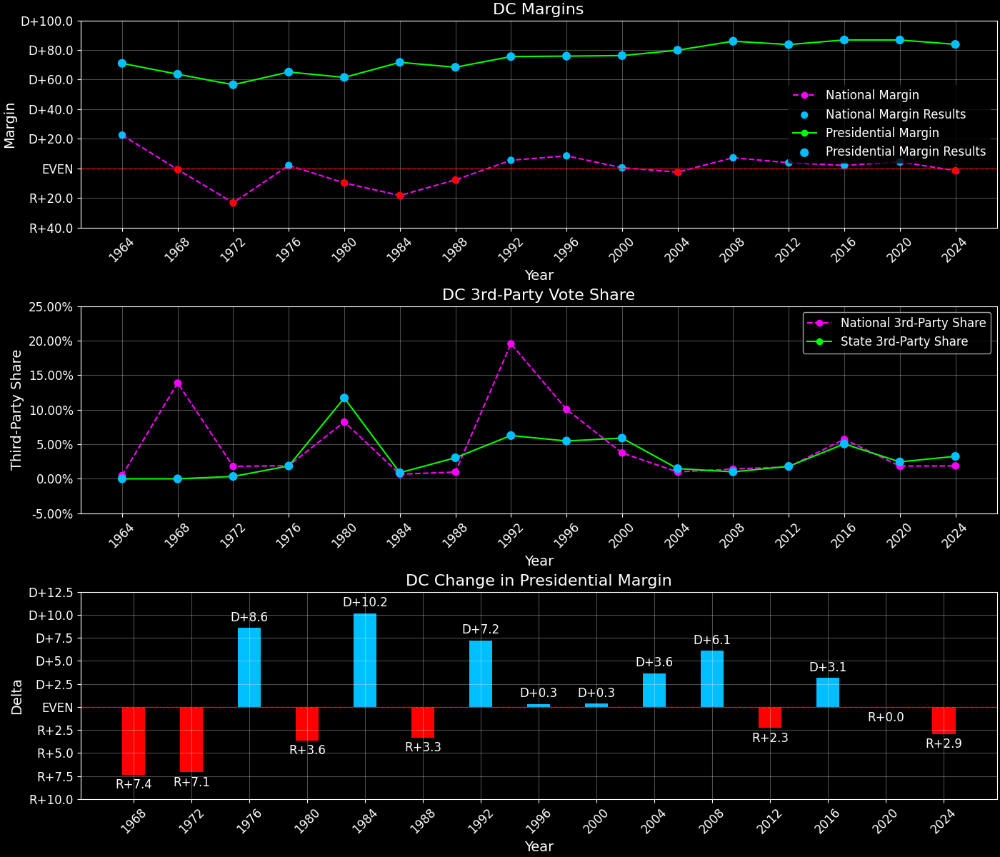
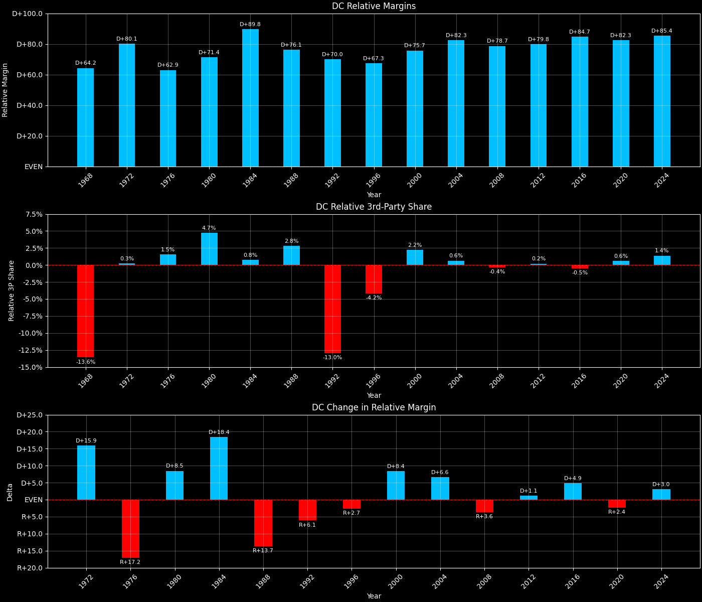
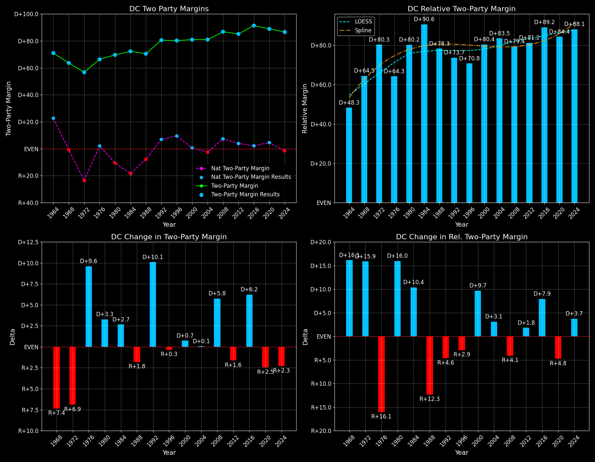

← Back to Map

Margins · 3rd-Party share · Pres. deltas

Relative margins · Relative 3rd-Party · Rel. deltas
District of Columbia (DC) — Total Data
| Year | EVs | D | R | State Margin | Nat. Margin | Rel. Margin | Total votes |
|---|
| 1968 | 3 | 139,566(81.8%) | 31,012(18.2%) | D+63.6 | R+0.7 | D+64.3 | 170,578 |
| 1972 | 3 | 127,627(78.1%) | 35,226(21.6%) | D+56.5(Δ R+7.1) | R+23.1(Δ R+22.4) | D+79.7(Δ D+15.4) | 163,421 |
| 1976 | 3 | 137,818(81.6%) | 27,873(16.5%) | D+65.1(Δ D+8.6) | D+2.1(Δ D+25.2) | D+63.1(Δ R+16.6) | 168,830 |
| 1980 | 3 | 130,231(74.9%) | 23,313(13.4%) | D+61.5(Δ R+3.6) | R+9.7(Δ R+11.8) | D+71.2(Δ D+8.2) | 173,889 |
| 1984 | 3 | 180,408(85.4%) | 29,009(13.7%) | D+71.7(Δ D+10.2) | R+18.2(Δ R+8.5) | D+89.9(Δ D+18.6) | 211,288 |
| 1988 | 3 | 159,407(82.6%) | 27,590(14.3%) | D+68.3(Δ R+3.3) | R+7.7(Δ D+10.5) | D+76.1(Δ R+13.8) | 192,877 |
| 1992 | 3 | 192,619(84.6%) | 20,698(9.1%) | D+75.5(Δ D+7.2) | D+5.6(Δ D+13.3) | D+70.0(Δ R+6.1) | 227,572 |
| 1996 | 3 | 158,220(85.2%) | 17,339(9.3%) | D+75.9(Δ D+0.3) | D+8.5(Δ D+3.0) | D+67.3(Δ R+2.7) | 185,726 |
| 2000 | 3 | 171,923(85.2%) | 18,073(9.0%) | D+76.2(Δ D+0.3) | D+0.5(Δ R+8.0) | D+75.7(Δ D+8.4) | 201,894 |
| 2004 | 3 | 202,970(89.2%) | 21,256(9.3%) | D+79.8(Δ D+3.6) | R+2.5(Δ R+3.0) | D+82.3(Δ D+6.6) | 227,586 |
| 2008 | 3 | 245,800(92.5%) | 17,367(6.5%) | D+85.9(Δ D+6.1) | D+7.3(Δ D+9.7) | D+78.7(Δ R+3.7) | 265,853 |
| 2016 | 3 | 282,830(90.9%) | 12,723(4.1%) | D+86.8 | D+2.1 | D+84.7 | 311,268 |
| 2020 | 3 | 317,323(92.1%) | 18,586(5.4%) | D+86.8(Δ R+0.0) | D+4.5(Δ D+2.4) | D+82.3(Δ R+2.4) | 344,356 |
| 2024 | 3 | 294,185(90.3%) | 21,076(6.5%) | D+83.8(Δ R+2.9) | R+1.5(Δ R+5.9) | D+85.3(Δ D+3.0) | 325,869 |
Column explanations
- Δ
- Change (delta) in the value from the previous election year.
- Year
- Election year.
- EVs
- Number of electoral votes allocated to this state or unit.
- D
- Number of votes for the Democratic candidate (raw count(pct%)).
- R
- Number of votes for the Republican candidate (raw count(pct%)).
- State Margin
- Margin between the two major-party candidates, including third-party votes ((D - R)/total).
- Nat. Margin
- The national presidential margin for that year, including third-party votes ((D_total - R_total)/total_votes).
- Rel. Margin
- The presidential margin relative to the national presidential margin (Margin - Nat. Margin).
- Total votes
- Total voter turnout or ballots cast (when provided).
District of Columbia (DC) — Third-Party Data
| Year | D | R | Other votes | State 3rd-Party Share | 3rd-Party Nat. Share | 3rd-Party Rel. Share |
|---|
| 1968 | 139,566(81.8%) | 31,012(18.2%) | 0(0.0%) | 0.00% | 13.86% | -13.86% |
| 1972 | 127,627(78.1%) | 35,226(21.6%) | 568(0.3%) | 0.35% | 1.80% | -1.46% |
| 1976 | 137,818(81.6%) | 27,873(16.5%) | 3,139(1.9%) | 1.86% | 1.90% | -0.04% |
| 1980 | 130,231(74.9%) | 23,313(13.4%) | 20,345(11.7%) | 11.70% | 8.24% | 3.46% |
| 1984 | 180,408(85.4%) | 29,009(13.7%) | 1,871(0.9%) | 0.89% | 0.67% | 0.22% |
| 1988 | 159,407(82.6%) | 27,590(14.3%) | 5,880(3.0%) | 3.05% | 0.98% | 2.07% |
| 1992 | 192,619(84.6%) | 20,698(9.1%) | 14,255(6.3%) | 6.26% | 19.55% | -13.28% |
| 1996 | 158,220(85.2%) | 17,339(9.3%) | 10,167(5.5%) | 5.47% | 10.05% | -4.58% |
| 2000 | 171,923(85.2%) | 18,073(9.0%) | 11,898(5.9%) | 5.89% | 3.75% | 2.15% |
| 2004 | 202,970(89.2%) | 21,256(9.3%) | 3,360(1.5%) | 1.48% | 1.00% | 0.48% |
| 2008 | 245,800(92.5%) | 17,367(6.5%) | 2,686(1.0%) | 1.01% | 1.42% | -0.41% |
| 2016 | 282,830(90.9%) | 12,723(4.1%) | 15,715(5.0%) | 5.05% | 5.73% | -0.68% |
| 2020 | 317,323(92.1%) | 18,586(5.4%) | 8,447(2.5%) | 2.45% | 1.84% | 0.61% |
| 2024 | 294,185(90.3%) | 21,076(6.5%) | 10,608(3.3%) | 3.26% | 1.88% | 1.38% |
Column explanations
- Year
- Election year.
- D
- Number of votes for the Democratic candidate (raw count(pct%)).
- R
- Number of votes for the Republican candidate (raw count(pct%)).
- Other votes
- Number of votes for third-party (other) candidates (raw count(pct%)).
- State 3rd-Party Share
- Share of the vote received by third-party (other) candidates.
- 3rd-Party Nat. Share
- The national third-party share for that year (3rd-Party votes / total votes).
- 3rd-Party Rel. Share
- Third-party share relative to the national third-party share (3rd-Party share - Nat. 3rd-Party share).

Two-party margins · relative · deltas
District of Columbia (DC) — Two-Party Data
| Year | EVs | D | R | 2-Party Margin | 2-Party Nat. Margin | 2-Party Rel. Margin |
|---|
| 1968 | 3 | 139,566(81.8%) | 31,012(18.2%) | D+63.6 | R+0.8 | D+64.5 |
| 1972 | 3 | 127,627(78.4%) | 35,226(21.6%) | D+56.7(Δ R+6.9) | R+23.6(Δ R+22.8) | D+80.3(Δ D+15.9) |
| 1976 | 3 | 137,818(83.2%) | 27,873(16.8%) | D+66.4(Δ D+9.6) | D+2.1(Δ D+25.7) | D+64.3(Δ R+16.1) |
| 1980 | 3 | 130,231(84.8%) | 23,313(15.2%) | D+69.6(Δ D+3.3) | R+10.6(Δ R+12.7) | D+80.2(Δ D+16.0) |
| 1984 | 3 | 180,408(86.1%) | 29,009(13.9%) | D+72.3(Δ D+2.7) | R+18.3(Δ R+7.7) | D+90.6(Δ D+10.4) |
| 1988 | 3 | 159,407(85.2%) | 27,590(14.8%) | D+70.5(Δ R+1.8) | R+7.8(Δ D+10.5) | D+78.3(Δ R+12.3) |
| 1992 | 3 | 192,619(90.3%) | 20,698(9.7%) | D+80.6(Δ D+10.1) | D+6.9(Δ D+14.7) | D+73.7(Δ R+4.6) |
| 1996 | 3 | 158,220(90.1%) | 17,339(9.9%) | D+80.2(Δ R+0.3) | D+9.5(Δ D+2.6) | D+70.8(Δ R+2.9) |
| 2000 | 3 | 171,923(90.5%) | 18,073(9.5%) | D+81.0(Δ D+0.7) | D+0.5(Δ R+8.9) | D+80.4(Δ D+9.7) |
| 2004 | 3 | 202,970(90.5%) | 21,256(9.5%) | D+81.0(Δ D+0.1) | R+2.5(Δ R+3.0) | D+83.5(Δ D+3.1) |
| 2008 | 3 | 245,800(93.4%) | 17,367(6.6%) | D+86.8(Δ D+5.8) | D+7.4(Δ D+9.9) | D+79.4(Δ R+4.1) |
| 2016 | 3 | 282,830(95.7%) | 12,723(4.3%) | D+91.4 | D+2.2 | D+89.2 |
| 2020 | 3 | 317,323(94.5%) | 18,586(5.5%) | D+88.9(Δ R+2.5) | D+4.5(Δ D+2.3) | D+84.4(Δ R+4.8) |
| 2024 | 3 | 294,185(93.3%) | 21,076(6.7%) | D+86.6(Δ R+2.3) | R+1.5(Δ R+6.0) | D+88.1(Δ D+3.7) |
Column explanations
- Δ
- Change (delta) in the value from the previous election year.
- Year
- Election year.
- EVs
- Number of electoral votes allocated to this state or unit.
- D
- Number of votes for the Democratic candidate (raw count(pct%)).
- R
- Number of votes for the Republican candidate (raw count(pct%)).
- 2-Party Margin
- Margin between the two major-party candidates, ignoring third-party votes ((D - R)/(D + R)).
- 2-Party Nat. Margin
- The national presidential margin for that year, including third-party votes ((D_total - R_total)/total_votes).
- 2-Party Rel. Margin
- The presidential margin relative to the national presidential margin (Margin - Nat. Margin).